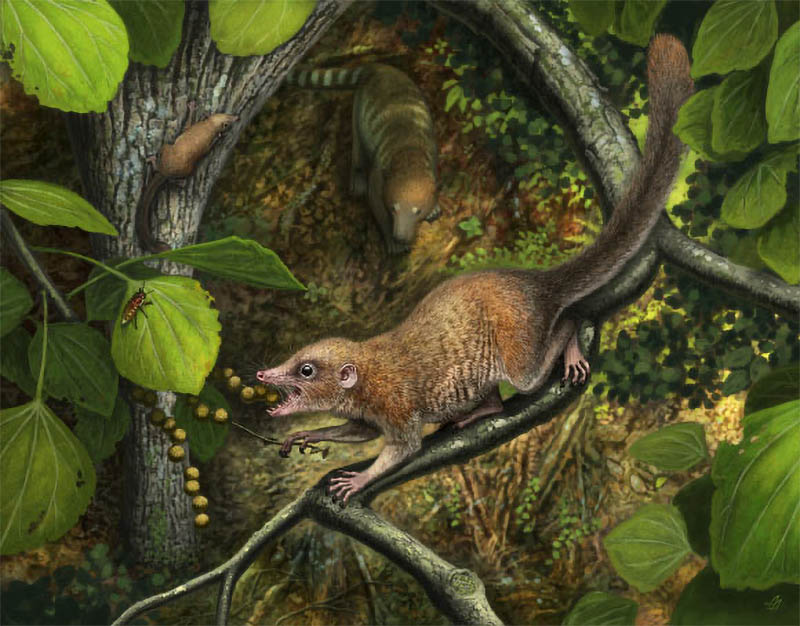

Squirrel Evolution
Survivors of the Asteroid Impact ( that ended the dinosaur era )
The Eutherian Mammals at the Root of Squirrel Evolution
- and all placental mammal evolution, including us!

Illustration by Andrey Atuchin - under CC BY‑4.0This small, shrew-like mammal is a reconstruction of an early eutherian, a member of the group of placental mammals that survived the asteroid impact 66 million years ago. These animals were small, likely burrowing, and adapted to foraging at night, traits that helped them survive a world darkened by ash and dust.
The Fungi Connection
In the darkness following the asteroid impact, fungi thrived where plants could not. Early mammals likely relied on insects and fungi as food.
Some squirrels, like the Douglas squirrel, still eat mushrooms and truffles today. They’ve even been observed hanging mushrooms to dry before caching them—a behavior that helps preserve food and spreads fungal spores to support forest health.
Only the Douglas and red squirrels—both members of the genus Tamiasciurus—are known among mammals to intentionally dry food before storing it for later use.
Drying food before storage is a remarkable behavior, rarely seen elsewhere in the animal kingdom. Other animals may dry food, but they don’t store it intentionally like Tamiasciurus squirrels do.
“These early mammals were already active at night—an adaptation that gave them an edge after the asteroid impact, when darkness covered the planet for months or years and daylight activity became impossible.”
Humans and Squirrels Share This Ancient Ancestor
Modern squirrels evolved tens of millions of years later, but they still carry some of the traits that helped their distant ancestors survive in extreme conditions, such as keen senses, agility, and adaptability.
Why These Traits Mattered
- Small size: Easier to shelter in burrows and avoid predators.
- Nocturnal habits: Useful before and after the extinction, especially during global darkness.
- Fungi and insect-based diets: Allowed flexibility when plant life collapsed.
After the Impact
- Darkness covered the planet, eliminating the distinction between day and night.
- Fungi thrived - insects ate fungi - squirrels ate fungi and insects.
- Mammals already adapted to foraging and navigating in low light had an advantage.